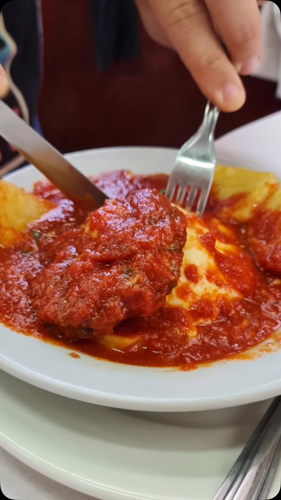
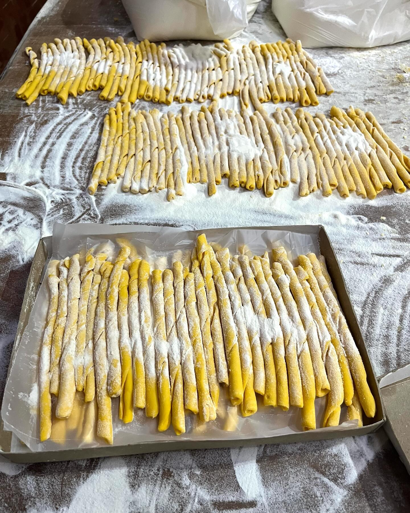
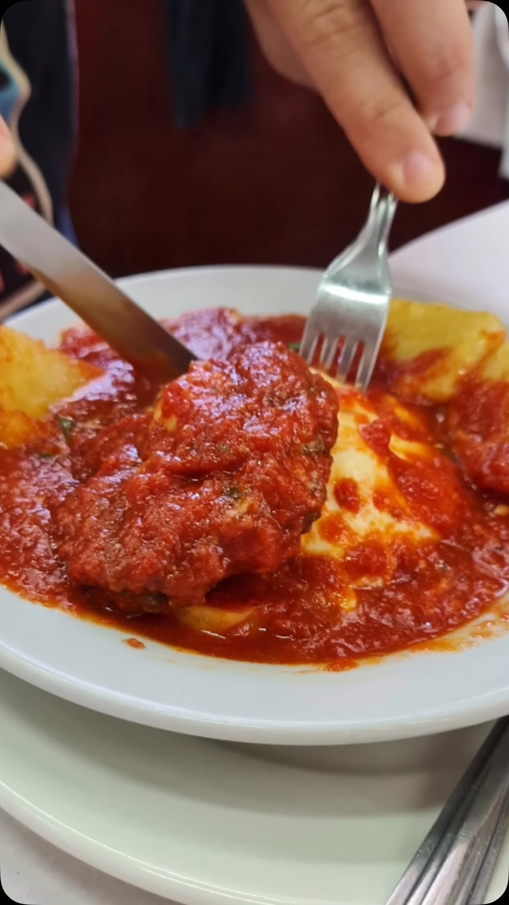
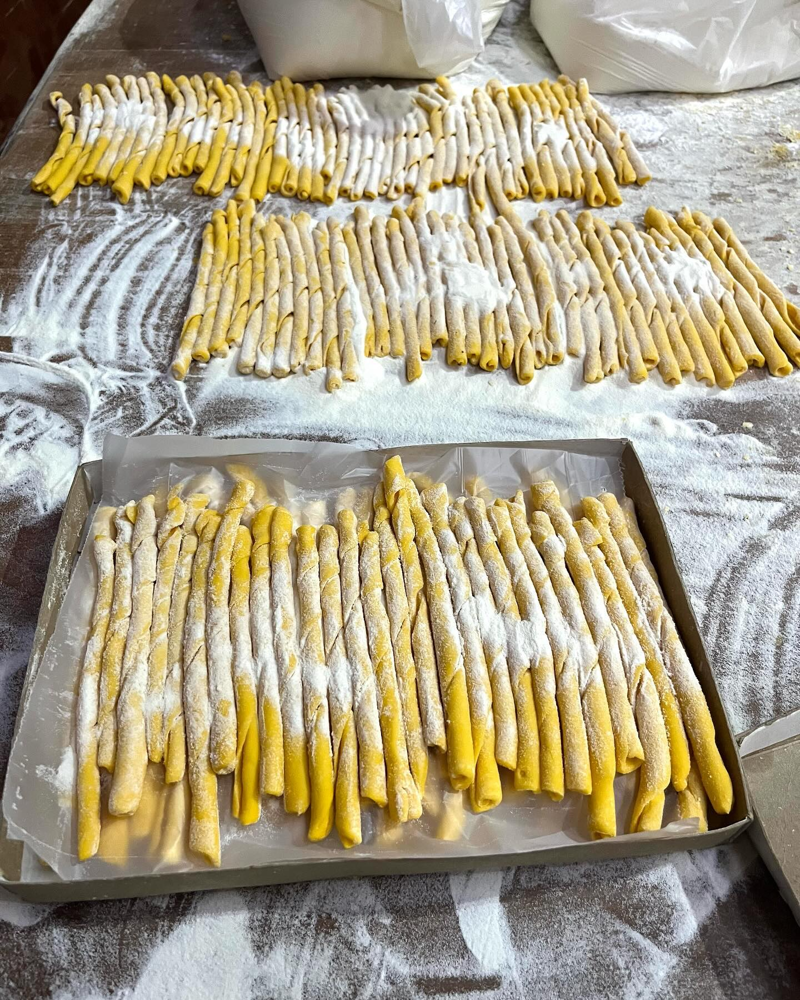
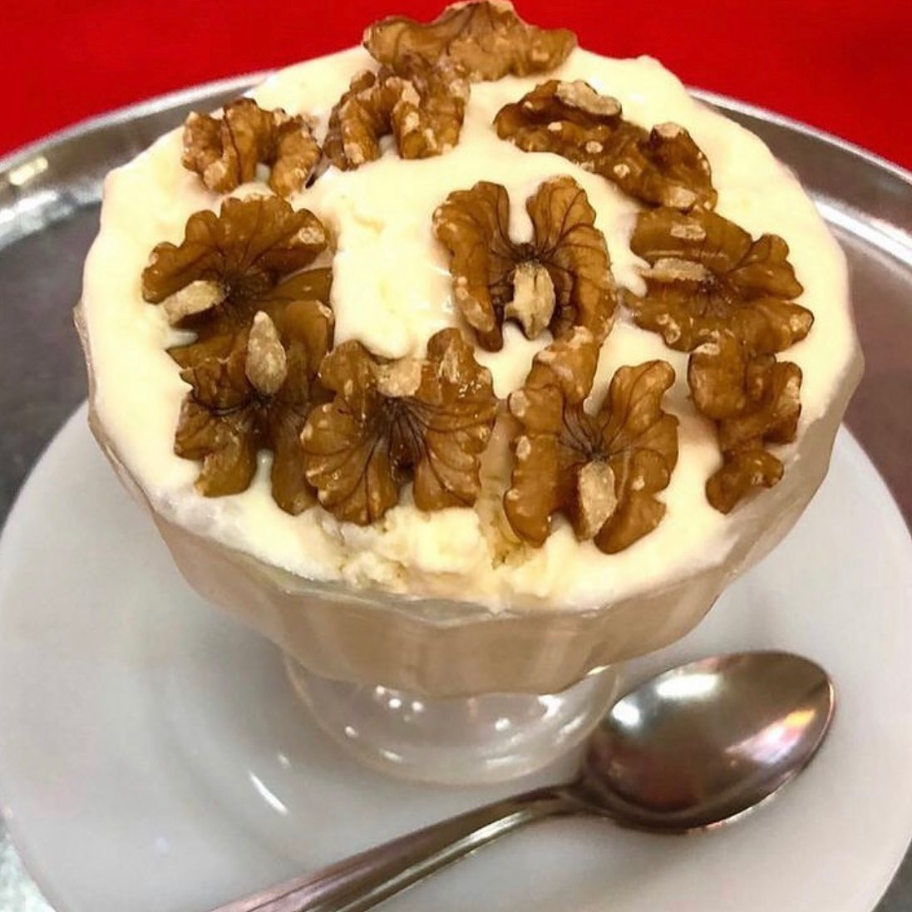
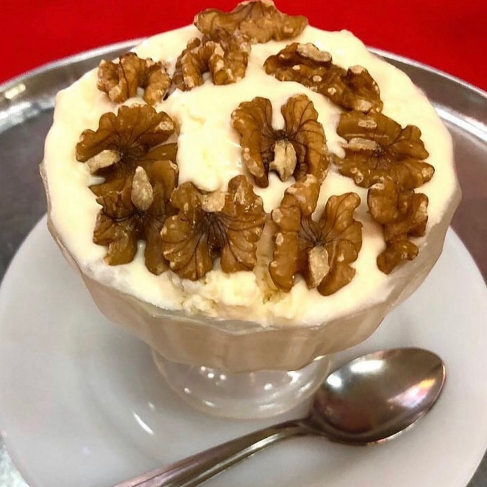

Desde 1956
Cantina Chichilo de Buenos Aires ofrece una experiencia auténtica de cocina tradicional, atendida por sus propios dueños en el emblemático barrio de La Paternal. Fue elegida por la productora Pol-Ka como locación para las novelas Ilusiones y El sodero de mi vida, y es reconocida como uno de los lugares preferidos de Diego Maradona.
Nuestras Especialidades
- Lentejas a caballo
- Pasta con chichiriceci
- Mondongo a la italiana
- Riñones al vino blanco
- Calamarettis a la escarpetta
- Rabas a la Calabria
- Fusiles con brócolis, anchoas, garbanzos y hongos
- Caracoles a la bordaleza
- Ranas a la provenzal

 





 

Contacto
Camarones 1901, esquina
Terrero 2006 (1416)
Capital Federal - República Argentina
Reservas: 011-4581-1984 • 011-4584-1263
Abierto de jueves a sábados de noche
Sábados y domingos almuerzos